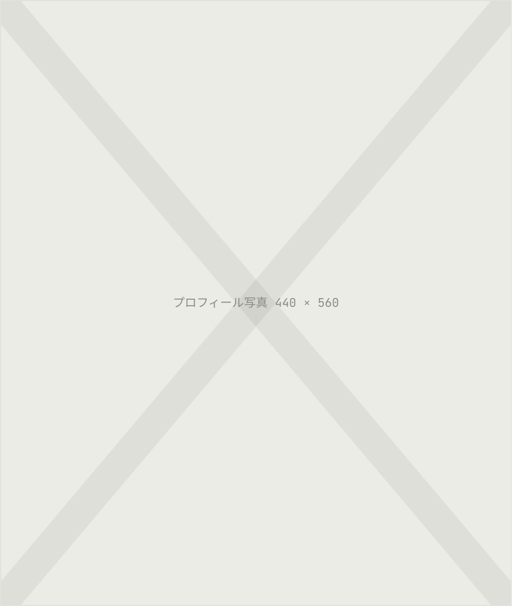

アクセシビリティを大切に、
誰もが使えるWebを。

Story
はじめまして、
キド シオリ です。
趣味の旅行を通じて、様々な観光Webサイトや紙媒体のデザインに触れてきました。ユーザーが旅先で迷わず、その土地の魅力が伝わるサイトを作ることを目指しています。
Figma / Illustrator / Photoshop を中心に、独学で2年間学び続けてきました。
skills・Tools 使えるツール
HTML / CSS
セマンティックなHTML設計、BEMを用いたCSS設計、レスポンシブ対応が可能。デザインカンプをもとにしたWebサイトのコーディングや、既存サイトのスタイル調整に対応。
- スキルレベル
- 実務経験あり
JavaScript
WebサイトのUI実装（ハンバーガーメニュー、アコーディオンなど）に対応。既存コードを活用した実装や、サイトの構造に応じた調整が可能。新しい動作や機能についても、AIを活用しながら実装・検証を行う。
- スキルレベル
- 実務経験あり・継続学習中
WordPress / PHP
WordPressのオリジナルテーマ制作、テンプレートの実装、カスタム投稿タイプやカスタムフィールドの設定などを経験。プラグインを活用したお問い合わせフォームの構築や、投稿データを利用したページの実装にも対応。
- スキルレベル
- 実装経験あり・継続学習中
Tools
- Git / GitHub
- ソースコードの管理
- Local
- ローカル環境でのWordPress開発
- AI Tools
- コードの調査、機能の実装支援、エラーの解決